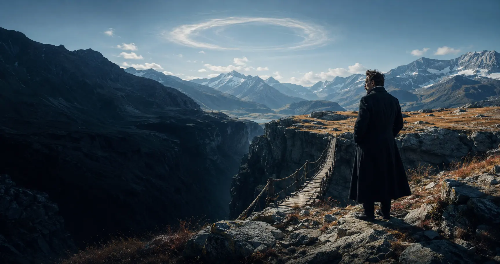

Filosofia contemporanea · Crisi e creazione
Dopo la morte di Dio,
chi crea il senso?
Se i valori non sono più garantiti dall’alto, siamo condannati al vuoto oppure diventiamo responsabili di ciò che sapremo affermare?
Tocca i tre punti luminosi
Quattro ingressi
Non collezionare formule: attraversa la crisi, interroga l’origine dei valori e misura la forza di un sì alla vita.
Scopro
Vivi il crollo di una certezza e osserva che cosa resta quando il fondamento scompare.
PercorsoStudio
Dodici tappe a due livelli, dalla tragedia greca alla controversa eredità novecentesca.
TestiApprofondisco
Opere pubblicate, frammenti postumi e interpretazioni accademiche restano distinti.
Biografia visualeA fumetti
Otto scene documentate: formazione, Wagner, Sils-Maria, Torino e il destino dell’archivio.
Scopro · Prima vivi il problema
Che cosa accade quando una certezza continua a governarci dopo che non le crediamo più?
Le scelte non assegnano un voto. Rendono visibile il passaggio dalla sicurezza ereditata al disorientamento, fino alla responsabilità di valutare senza un tribunale fuori dalla vita.
Studio · Dodici tappe
Dalla crisi dei fondamenti all’esperimento di una vita affermata
Spiegazioni chiare, esempi concreti e domande per entrare nel problema.
Il progresso resta sul dispositivo. Serve a ritrovare il filo, non a misurare il tuo valore.
Laboratorio · Genealogia e affermazione
Metti alla prova il metodo, non una frase celebre
Nel primo laboratorio ricostruisci la storia di un valore; nel secondo esplori l’eterno ritorno come domanda sulla vita intera, senza ridurlo a un test di personalità.
Approfondisco · Testi e interpretazioni
La voce di Nietzsche, il lavoro degli studiosi
Ogni scheda indica se stai leggendo un’opera pubblicata, un frammento postumo, una ricostruzione storica o una controversia interpretativa.
A fumetti · Otto scene
Una vita di libri, fratture e geografie
La biografia orienta, ma non dimostra la filosofia. Le scene distinguono i fatti attestati dalle leggende, compreso il celebre cavallo di Torino.
Mappe concettuali
Segui passaggi, ritorni e tensioni
Strumenti
Ritrova, confronta, verifica
La domanda che resta
Se non esiste un tribunale fuori dalla vita, come distinguiamo la creazione di valori dall’arbitrio del più forte?
Nietzsche non consegna un nuovo catechismo. Costringe a vedere che anche i valori più solenni hanno una storia e un corpo, ma non per questo autorizza ogni scelta. La prova diventa più esigente: domandare quale forma di vita un valore renda possibile, quale prezzo imponga e se potremmo volerla ancora, senza nasconderne dolore e conseguenze.